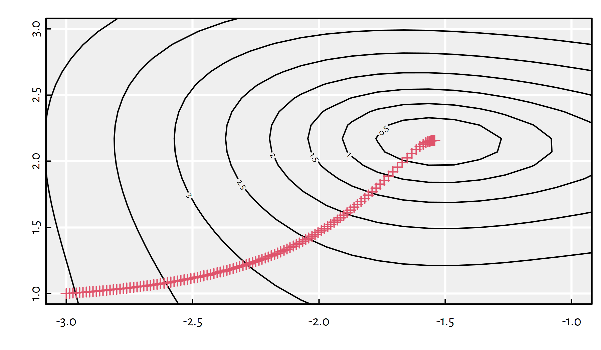

6.3 Gradient Descent
6.3.1 Function Gradient (*)
How to choose the [guessed direction] in our iterative optimisation algorithm?
If we are minimising a smooth function, the simplest possible choice is to use the information included in the objective’s gradient, which provides us with the direction where the function decreases the fastest.
(*) Gradient of \(f:\mathbb{R}^p\to\mathbb{R}\), denoted \(\nabla f:\mathbb{R}^p\to\mathbb{R}^p\) is the vector of all its partial derivatives, (\(\nabla\) – nabla symbol = differential operator) \[ \nabla f(\mathbf{x}) = \left[ \begin{array}{c} \frac{\partial f}{\partial x_1}(\mathbf{x})\\ \vdots\\ \frac{\partial f}{\partial x_p}(\mathbf{x}) \end{array} \right] \] If we have a function \(f(x_1,...,x_p)\), the partial derivative w.r.t. the \(i\)-th variable, denoted \(\frac{\partial f}{\partial x_i}\) is like an ordinary derivative w.r.t. \(x_i\) where \(x_1,...,x_{i-1},x_{i+1},...,x_p\) are assumed constant.
Function differentiation is an important concept – see how it’s referred to in, e.g., the Keras manual at https://keras.rstudio.com/reference/fit.html. Don’t worry though – we take our time with this – Melbourne wasn’t built in a day.
Recall our \(g\) function defined above: \[ g(x_1,x_2)=\log\left((x_1^{2}+x_2-5)^{2}+(x_1+x_2^{2}-3)^{2}+x_1^2-1.60644\dots\right) \]
It can be shown (*) that: \[ \begin{array}{ll} \frac{\partial g}{\partial x_1}(x_1,x_2)=& \displaystyle\frac{ 4x_1(x_1^{2}+x_2-5)+2(x_1+x_2^{2}-3)+2x_1 }{(x_1^{2}+x_2-5)^{2}+(x_1+x_2^{2}-3)^{2}+x_1^2-1.60644\dots} \\ \frac{\partial g}{\partial x_2}(x_1,x_2)=& \displaystyle\frac{ 2(x_1^{2}+x_2-5)+4x_2(x_1+x_2^{2}-3) }{(x_1^{2}+x_2-5)^{2}+(x_1+x_2^{2}-3)^{2}+x_1^2-1.60644\dots} \end{array} \]
6.3.2 Three Facts on the Gradient
For now, we should emphasise three important facts:
Fact 1.
If we are unable to derive the gradient analytically, we can rely on its finite differences approximation:
\[ \frac{\partial f}{\partial x_i}(x_1,\dots,x_p) \simeq \frac{ f(x_1,...,x_i+\delta,...,x_p)-f(x_1,...,x_i,...,x_p) }{ \delta } \] for some small \(\delta>0\), say, \(\delta=10^{-6}\).
Example implementation:
# gradient of f at x=c(x[1],...,x[p])
grad <- function(f, x, delta=1e-6) {
p <- length(x)
gf <- numeric(p) # vector of length p
for (i in 1:p) {
xi <- x
xi[i] <- xi[i]+delta
gf[i] <- f(xi)
}
(gf-f(x))/delta
}(*) Interestingly, some modern vector/matrix algebra frameworks like TensorFlow (upon which keras is built) or PyTorch, feature methods to “derive” the gradient algorithmically (autodiff; automatic differentiation).
Sanity check:
## [1] -3.186485 -1.365634## [1] -3.186485 -1.365636## [1] 1.058842e-05 1.981748e-05## [1] 4.129167e-09 3.577146e-10BTW, there is also the grad() function in package numDeriv
that might be a little more accurate (uses a different approximation).
Fact 2.
The gradient of \(f\) at \(\mathbf{x}\), \(\nabla f(\mathbf{x})\), is a vector that points in the direction of the steepest slope.
Minus gradient, \(-\nabla f(\mathbf{x})\), is the direction where the function decreases the fastest.
(*) This can be shown by considering a function’s first-order Taylor series approximation.
Therefore, in our iterative algorithm, we may try taking the direction of the minus gradient!
How far in that direction? Well, a bit. We will refer to the desired step size as the learning rate, \(\eta\).
This will be called the gradient descent method (GD; Cauchy, 1847).
Fact 3.
If a function \(f\) has a local minimum at \(\mathbf{x}^*\), then \(\nabla {f}(\mathbf{x}^*)=[0,\dots,0]\).
(***) More generally, a twice-differentiable function has a local minimum at \(\mathbf{x}^*\) if and only if its gradient vanishes there and \(\nabla^2 {f}(\mathbf{x}^*)\) (Hessian matrix = matrix of all second-order derivatives) is positive-definite.
6.3.3 Gradient Descent Algorithm (GD)
An implementation of the gradient descent algorithm:
# par - initial guess
# fn - a function to be minimised
# gr - a function to return the gradient of fn
# eta - learning rate
# maxit - maximum number of iterations
# tol - convergence toleranceoptim_gd <- function(par, fn, gr, eta=0.01,
maxit=1000, tol=1e-8) {
f_last <- fn(par)
for (i in 1:maxit) {
par <- par - eta*grad_g_vectorised(par) # update step
f_cur <- fn(par)
if (abs(f_cur-f_last) < tol) break
f_last <- f_cur
}
list( # see ?optim, section `Value`
par=par,
value=g_vectorised(par),
counts=i,
convergence=as.integer(i==maxit)
)
}Tests of the \(g\) function:
## $par
## [1] -1.542291 2.156410
##
## $value
## [1] 1.332582e-08
##
## $counts
## [1] 135
##
## $convergence
## [1] 0Zooming in the contour plot to see the actual path (\(\eta=0.01\)):

## List of 4
## $ par : num [1:2] -1.54 2.16
## $ value : num 1.33e-08
## $ counts : int 135
## $ convergence: int 0Now with \(\eta=0.05\):

## List of 4
## $ par : num [1:2] -1.54 2.15
## $ value : num 0.000203
## $ counts : int 417
## $ convergence: int 0And now with \(\eta=0.1\):

## List of 4
## $ par : num [1:2] -1.52 2.33
## $ value : num 0.507
## $ counts : int 1000
## $ convergence: int 1If the learning rate \(\eta\) is too small, the convergence might be too slow and we might get stuck in a plateau.
On the other hand, if \(\eta\) is too large, we might be overshooting and end up bouncing around the minimum.
This is why many optimisation libraries (including keras/TensorFlow) implement some of the following ideas:
learning rate decay – start with large \(\eta\), decreasing it in every iteration, say, by some percent;
line search – determine optimal \(\eta\) in every step by solving a 1-dimensional optimisation problem w.r.t. \(\eta\in[0,\eta_{\max}]\);
momentum – the update step is based on a combination of the gradient direction and the previous change of the parameters, \(\Delta\mathbf{x}\); can be used too accelerate search in the relevant direction and minimise oscillations.
6.3.4 Example: MNIST
Recall that in the previous chapter we’ve studied the MNIST dataset.
Let us go back to the task of fitting a multiclass logistic regression model.
library("keras")
mnist <- dataset_mnist()
# get train/test images in greyscale
X_train <- mnist$train$x/255 # to [0,1]
X_test <- mnist$test$x/255 # to [0,1]
# get the corresponding labels in {0,1,...,9}:
Y_train <- mnist$train$y
Y_test <- mnist$test$yThe labels need to be one-hot encoded:
one_hot_encode <- function(Y) {
stopifnot(is.numeric(Y))
c1 <- min(Y) # first class label
cK <- max(Y) # last class label
K <- cK-c1+1 # number of classes
Y2 <- matrix(0, nrow=length(Y), ncol=K)
Y2[cbind(1:length(Y), Y-c1+1)] <- 1
Y2
}
Y_train2 <- one_hot_encode(Y_train)
Y_test2 <- one_hot_encode(Y_test)Recall that the output of the logistic regression model (1-layer neural network with softmax) can be written in the matrix form as: \[ \hat{\mathbf{Y}}=\mathrm{softmax}\left( \mathbf{\dot{X}}\,\mathbf{B} \right), \] where \(\mathbf{\dot{X}}\in\mathbb{R}^{n\times 785}\) is a matrix representing \(n\) images of size \(28\times 28\), augmented with a column of \(1\)s, and \(\mathbf{B}\in\mathbb{R}^{785\times 10}\) is the coefficients matrix and \(\mathrm{softmax}\) is applied on each matrix row separately.
Of course, by the definition of matrix multiplication, \(\hat{\mathbf{Y}}\) will be a matrix of size \(n\times 10\), where \(\hat{y}_{i,k}\) represents the predicted probability that the \(i\)-th image depicts the \(k\)-th digit.
# convert to matrices of size n*784
# and add a column of 1s
X_train1 <- cbind(1.0, matrix(X_train, ncol=28*28))
X_test1 <- cbind(1.0, matrix(X_test, ncol=28*28))softmax <- function(T) {
T <- exp(T)
T/rowSums(T)
}
nn_predict <- function(B, X) {
softmax(X %*% B)
}Define the functions to compute cross-entropy (which we shall minimise) and accuracy (which we shall report to a user):
accuracy <- function(Y_true, Y_pred) {
# both arguments are one-hot encoded
Y_true_decoded <- apply(Y_true, 1, which.max)
Y_pred_decoded <- apply(Y_pred, 1, which.max)
# proportion of equal corresponding pairs:
mean(Y_true_decoded == Y_pred_decoded)
}
cross_entropy <- function(Y_true, Y_pred) {
-sum(Y_true*log(Y_pred))/nrow(Y_true)
}(*) Cross-entropy in non-matrix form (\(n\) – number of samples, \(K\) – number of classes, \(p+1\) – number of model parameters; in our case \(K=10\) and \(p=784\)):
\[ \begin{array}{rcl} E(\mathbf{B}) &=& -\displaystyle\frac{1}{n} \displaystyle\sum_{i=1}^n \displaystyle\sum_{k=1}^K y_{i,k} \log\left( \frac{ \exp\left( \displaystyle\sum_{j=0}^p \dot{x}_{i,j} \beta_{j,k} \right) }{ \displaystyle\sum_{c=1}^K \exp\left( \displaystyle\sum_{j=0}^p \dot{x}_{i,j} \beta_{j,c} \right) } \right)\\ &=& \displaystyle\frac{1}{n} \displaystyle\sum_{i=1}^n \left( \log \left(\displaystyle\sum_{k=1}^K \exp\left( \displaystyle\sum_{j=0}^p \dot{x}_{i,j} \beta_{j,k} \right)\right) - \displaystyle\sum_{k=1}^K y_{i,k} \displaystyle\sum_{j=0}^p \dot{x}_{i,j} \beta_{j,k} \right) \end{array} \]
(***) Partial derivative of cross-entropy w.r.t. \(\beta_{a,b}\) in non-matrix form:
\[ \begin{array}{rcl} \displaystyle\frac{\partial E}{\partial \beta_{a,b}}(\mathbf{B}) &=& \displaystyle\frac{1}{n} \displaystyle\sum_{i=1}^n \dot{x}_{i,a} \left( \frac{ \exp\left( \displaystyle\sum_{j=0}^p \dot{x}_{i,j} \beta_{j,b} \right) }{ \displaystyle\sum_{k=1}^K \exp\left( \displaystyle\sum_{j=0}^p \dot{x}_{i,j} \beta_{j,k} \right) } - y_{i,b} \right)\\ &=& \displaystyle\frac{1}{n} \displaystyle\sum_{i=1}^n \dot{x}_{i,a} \left( \hat{y}_{i,b} - y_{i,b} \right) \end{array} \]
It may be shown (*) that the gradient of cross-entropy (with respect to the parameter matrix \(\mathbf{B}\)) can be expressed in the matrix form as:
\[ \frac{1}{n} \mathbf{\dot{X}}^T\, (\mathbf{\hat{Y}}-\mathbf{Y}) \]
Luckily, we are not overwhelmed with the above, because we can always substitute the gradient with the finite differences (yet, these will be slower). :)
Let us implement the gradient descent method:
# random matrix of size 785x10 - initial guess
B <- matrix(rnorm(ncol(X_train1)*ncol(Y_train2)),
nrow=ncol(X_train1))
eta <- 0.1 # learning rate
maxit <- 100 # number of GD iterations
system.time({ # measure time spent
# for simplicity, we stop only when we reach maxit
for (i in 1:maxit) {
B <- B - eta*grad_cross_entropy(
X_train1, Y_train2, nn_predict(B, X_train1))
}
}) # `user` - processing time in seconds:## user system elapsed
## 80.983 26.926 40.358Unfortunately, the method’s convergence is really slow (we are optimising over \(7850\) parameters…) and the results after 100 iterations are disappointing:
## [1] 0.4646167## [1] 0.47356.3.5 Stochastic Gradient Descent (SGD)
In turns out that there’s a simple cure for that.
Sometimes the true global minimum of cross-entropy for the whole training set is not exactly what we really want.
In our predictive modelling task, we are minimising train error but what we really want is to minimise the test error [which we cannot refer to while training = no cheating!]
It is rational to assume that both the train and the test set consist of random digits independently sampled from the set of “all the possible digits out there in the world”.
Looking at the objective (cross-entropy): \[ E(\mathbf{B}) = -\frac{1}{n^\text{train}} \sum_{i=1}^{n^\text{train}} \log \Pr(Y=y_i^\text{train}|\mathbf{x}_{i,\cdot}^\text{train},\mathbf{B}). \]
How about we try fitting to different random samples of the train set in each iteration of the gradient descent method instead of fitting to the whole train set?
\[ E(\mathbf{B}) = -\frac{1}{b} \sum_{i=1}^b \log \Pr(Y=y_{\text{random\_index}_i}^\text{train}|\mathbf{x}_{\text{random\_index}_i,\cdot}^\text{train},\mathbf{B}), \]
where \(b\) is some fixed batch size.
Such a scheme is often called stochastic gradient descent.
Technically, this is sometimes referred to as mini-batch gradient descent; there are a few variations popular in the literature, we pick the most intuitive now.
Stochastic gradient descent:
B <- matrix(rnorm(ncol(X_train1)*ncol(Y_train2)),
nrow=ncol(X_train1))
eta <- 0.1
maxit <- 100
batch_size <- 32
system.time({
for (i in 1:maxit) {
wh <- sample(nrow(X_train1), size=batch_size)
B <- B - eta*grad_cross_entropy(
X_train1[wh,], Y_train2[wh,],
nn_predict(B, X_train1[wh,])
)
}
})## user system elapsed
## 0.141 0.071 0.085## [1] 0.40435## [1] 0.4123The errors are slightly worse but that was very quick.
Why don’t we increase the number of iterations?
B <- matrix(rnorm(ncol(X_train1)*ncol(Y_train2)),
nrow=ncol(X_train1))
eta <- 0.1
maxit <- 10000
batch_size <- 32
system.time({
for (i in 1:maxit) {
wh <- sample(nrow(X_train1), size=batch_size)
B <- B - eta*grad_cross_entropy(
X_train1[wh,], Y_train2[wh,],
nn_predict(B, X_train1[wh,])
)
}
})## user system elapsed
## 8.207 0.175 8.235## [1] 0.8932667## [1] 0.8939This is great.
Let’s take a closer look at how the train/test error behaves in each iteration for different batch sizes.

## user system elapsed
## 67.199 14.650 34.313
## user system elapsed
## 150.158 54.977 56.858